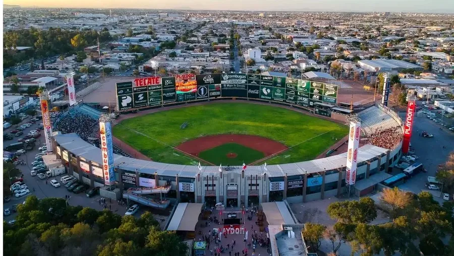
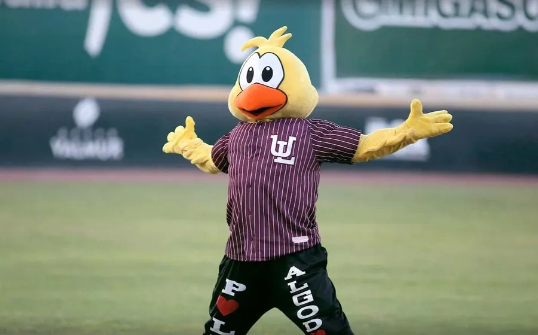

Equipo
Los Algodoneros de Unión Laguna representan a Torreón, Coahuila, y a toda la Comarca Lagunera, una región famosa por sus campos de algodón. Sus colores son el guinda, el blanco y el dorado, por eso también se les dice "los guindas".
Historia
Nacieron en 1940 como Unión Laguna de Torreón, fundados por los dueños de la jabonera La Unión. Su primer juego en la LMB fue en marzo de ese año, en el Estadio de la Revolución, contra el equipo de Nuevo Laredo que después se convertiría en los Tecolotes.
Han tenido varios nombres y casas. En los años setenta, ya como Algodoneros, jugaron en el Estadio Superior, armado con las piezas del Colt Stadium, el antiguo parque de los Colt .45s de Houston, que se trajo desde Texas. De 2003 a 2017 fueron los Vaqueros y en 2018 recuperaron el nombre de Algodoneros.
Estadio
El Estadio de la Revolución se inauguró el 15 de septiembre de 1932, cuando Torreón cumplía 25 años como ciudad, y es el estadio de beisbol profesional más antiguo de México que sigue en uso. Tiene 7,689 lugares y, como se construyó con una pista de atletismo alrededor, también tiene la zona de foul más grande de la liga.

Mascota
El Pollo Algodonero es la mascota del equipo: un pollito amarillo que anima los juegos con el uniforme guinda a rayas del Unión Laguna.

Leyendas
- 1941
Baldomero "Mel" Almada. El primer mexicano en Grandes Ligas (1933) dirigió al equipo en sus primeros años.
- 1942
Martín Dihigo. "El Maestro" cubano fue mánager y lanzador del primer título; está en el Salón de la Fama de Cooperstown.
- 1950
Guillermo "Memo" Garibay. Mánager del segundo campeonato. El equipo retiró su número 11.
- 2026
Albert Lara. El cubano fue el mejor bateador del equipo (.344) y fue elegido para el Juego de Estrellas.
Temporada 2026
Empezaron con Fernando Tatís como mánager y a finales de junio tenían 26 victorias y 34 derrotas. Ramón Santiago tomó el equipo, ganó 20 de sus 33 juegos y los metió a los playoffs como sextos del norte (46-47). Ahí cayeron ante los Toros, que terminaron siendo campeones.